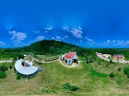

Universidad Politécnica Mesoamericana
Comprometidos con la formación profesional y el desarrollo regional, impulsando una educación de calidad con visión tecnológica.
Conócenos¿Quiénes somos?
Somos una institución comprometida con la formación profesional de calidad, enfocada en el desarrollo tecnológico, la innovación y el crecimiento personal de nuestros estudiantes.
Noticias Recientes
SEMANA DE INDUCCIÓN Y BIENVENIDA A LA GENERACION 2025-2028

Próximamente se publicarán las noticias más importantes de la comunidad universitaria.